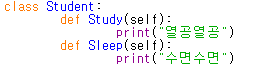

python
문자열 포매팅
포맷 코드
%s 문자열 %d 정수 %f 부동소수
클래스
사용방법: class 클래스 이름(): 수행내용....(클래스 함수를 메서드라고 함.)

nmmlee라는 인스턴스를 만들고, 메서드와 함께 사용
클래스 상속
사용방법: 상속할 클래스를 새로 만든 클래스 괄호 안에 넣어준다.
상속받은 클래스로 만든 인스턴스는 상위 클래스의 메서드 수행 가능